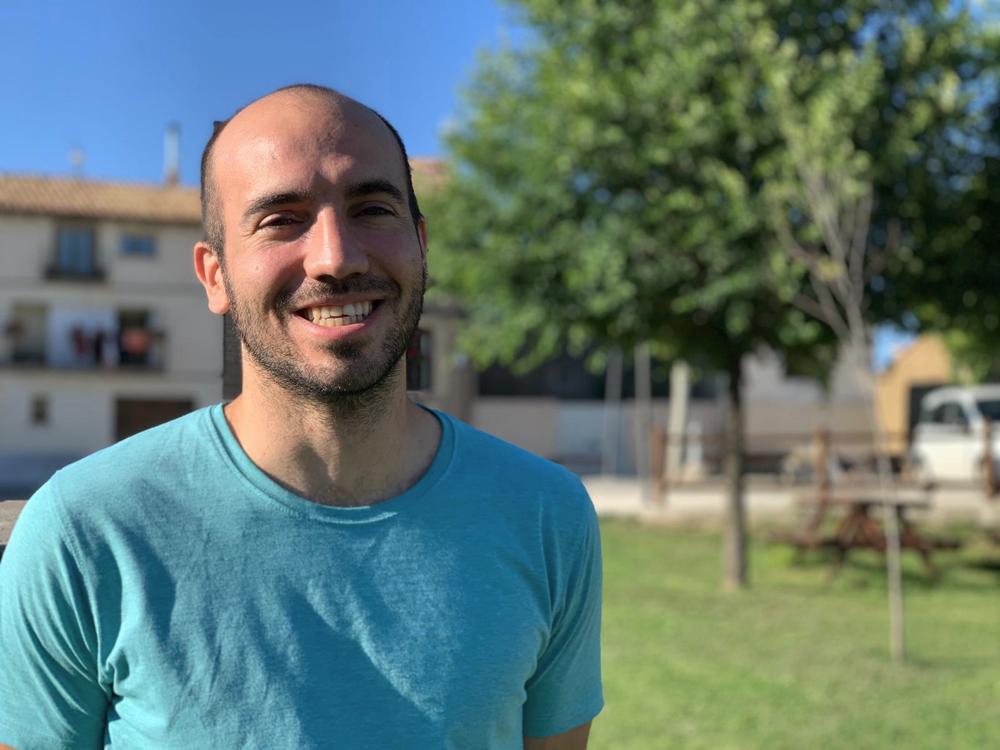
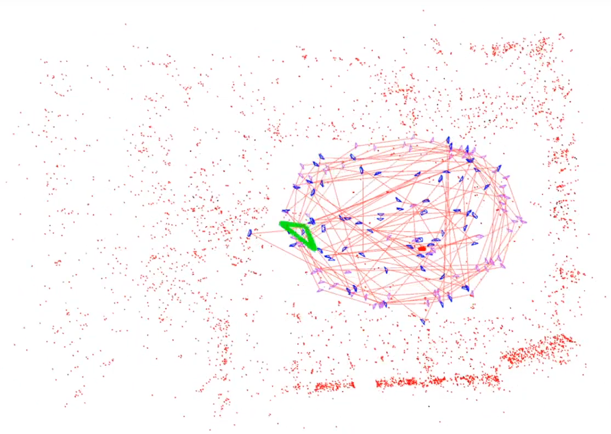
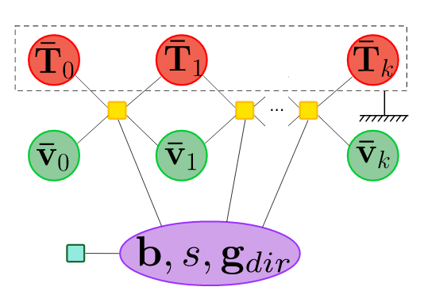
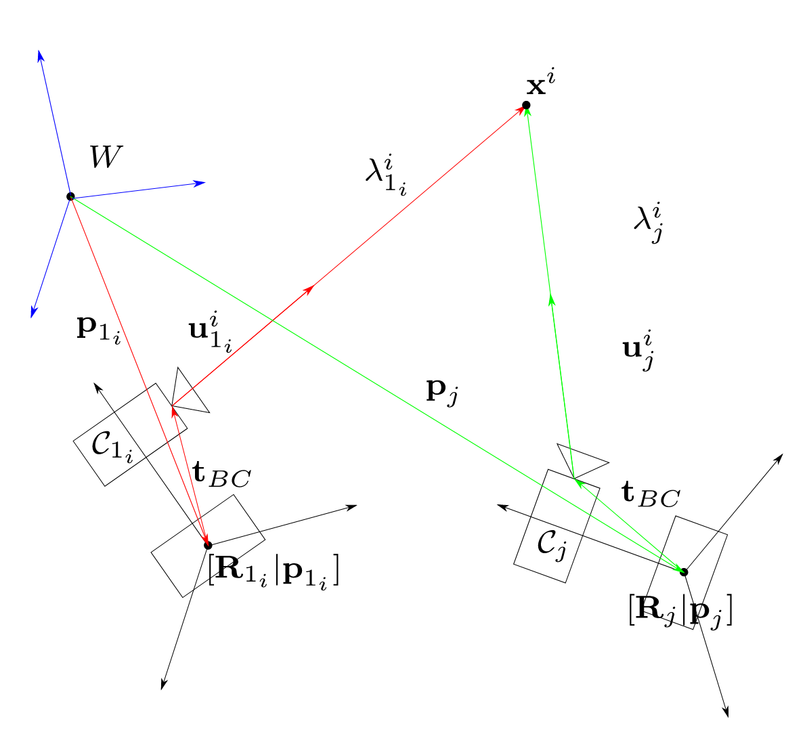

|
Carlos Campos
I am a fourth year PhD student in Computer Vision at Universidad de Zaragoza, under supervision of
Prof. Juan D. Tardos.
My work is focused on algorithms for AR/VR , autonomus driving and human-robot interactions,
where awareness of sourrounding environment and localization play an essential role
My research interests embrace, but are not limited to, visual and visual-inertial SLAM ,
Structure from Motion, non-linear optimization, machine learning and image processing.
|

|
|

|
ORB-SLAM3: An Accurate Open-Source Library for Visual, Visual-Inertial and Multi-Map SLAM
Carlos Campos*, Richard Elvira*, Juan J. Gómez, José M. M. Montiel, Juan D. Tardós.
Preprint, 2020
[arXiv] [Code] [Videos]
We present ORB-SLAM3, the first real-time SLAM library able to perform Visual, Visual-Inertial and Multi-Map SLAM with monocular, stereo and RGB-D cameras, using pin-hole and fisheye lens models. In all sensor configurations, ORB-SLAM3 is as robust as the best systems available in the literature, and significantly more accurate.
|
|

|
Inertial-Only Optimization for Visual-Inertial Initialization
Carlos Campos, José M. M. Montiel, Juan D. Tardós.
IEEE International Conference on Robotics and Automation (ICRA), 2020
[arXiv]
We formulate for the first time visual-inertial initialization as an optimal estimation problem, in the sense of maximum-a-posteriori (MAP) estimation. This allows us to properly take into account IMU measurement uncertainty, leading to lowest initialization times and more precise results.
|
|

|
Fast and Robust Initialization for Visual-Inertial SLAM
Carlos Campos, José M. M. Montiel, Juan D. Tardós.
IEEE International Conference on Robotics and Automation (ICRA), 2019
[arXiv]
In this paper we build on a previous initialization method, modifying it to be more general and efficient. We improve accuracy with several rounds of visual-inertial bundle adjustment, and robustify the method with novel observability and consensus tests, that discard erroneous solutions.
|
|
|
Universidad de Zaragoza
PhD in Coomputer Vision 11/2017-Now
MSc in Industrial Engineering 10/2014-12/2016
BSc in Industrial Engineering 10/2010-10/2014
|
|
|
INP-ENSEEIHT Toulouse (France)
MSc in Signal Processing and Electronics 09/2015-09/2017
|
|